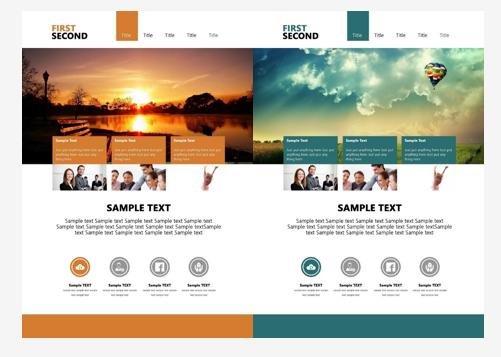
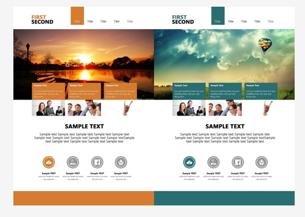

Concept of HTML
- HTML (Hypertext Markup Language) is the code that is used to structure a web page and its content.
- For example, content could be structured within a set of paragraphs, a list of bulleted points, or using images and data tables. As the title suggests, this article will give you a basic understanding of HTML and its functions.
- HTML5 is the latest version of HTML, the code that describes web pages. It's actually three kinds of code: HTML, which provides the structure; Cascading Style Sheets (CSS), which take care of presentation; and JavaScript, which makes things happen.
HTML Element

- The main parts of element are as follows:
- The opening tag: This consists of the name of the element (in this case, p), wrapped in opening and closing angle brackets.
- The closing tag: This is the same as the opening tag, except that it includes a forward slash before the element name.
- The content: This is the content of the element, which in this case is just text.
- The element: The opening tag, the closing tag, and the content together comprise the element.
- The difference between start tags and end tags is that the latter includes a slash before the tag name.
- If element has no content that is called Empty Element.
- HTML elements can be nested (elements can contain elements).
- Some specials elements have no the closing tag (img, hr, br, input,…)
Block level elements in HTML: A block-level element always starts on a new line and takes up the full width available (stretches out to the left and right as far as it can).

Inline elements in HTML: An inline element does not start on a new line and only takes up as much width as necessary.

HTML Element
| Tag | Description |
|---|---|
| <article> | Defines an article in a document |
| <aside> | Defines content aside from the page content |
| <details> | Defines additional details that the user can view or hide |
| <figcaption> | Defines a caption for a <figure> element |
| <figure> | Defines self-contained content |
| <footer> | Defines a footer for a document or section |
| <header> | Defines a header for a document or section |
| <main> | Defines the main content of a document |
| <mark> | Defines marked/highlighted text |
| <nav> | Defines navigation links |
HTML Attribute
- Attributes contain extra information about the element that you don't want to appear in the actual content.
- An attribute should always have the following:
- A space between it and the element name (or the previous attribute, if the element already has one or more attributes).
- The attribute name, followed by an equals sign.
- The attribute value, wrapped by opening and closing quotation marks.

Attention
- class
The HTML class attribute is used to define equal styles for elements with the same class name.
HTML elements can have more than one class name, each class name must be separated by a space.
- id
The id attribute specifies a unique id for an HTML element (the value must be unique within the HTML document).
Note:
- The class, id value is case-sensitive.
- The id value must contain at least one character, and must not contain whitespace (spaces, tabs, etc.)


 yukon1000
yukon1000
 Art of Tea
Art of Tea
 Clarity
Clarity
 Revise
Revise
 Prezman
Prezman


 
